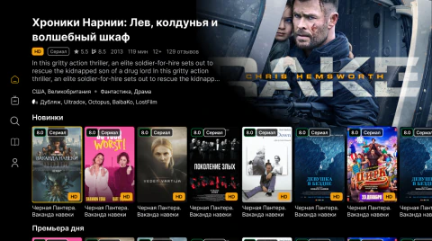
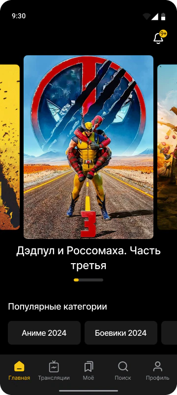

01 / 04
Streaming at scale.
COMMERCIAL PRODUCT / MOBILE & TVFrom a phone to the big screen. Mobile and TV engineering for a video product serving 350K+ registered users and 80K+ monthly active users.


ONE PRODUCT. THREE WAYS TO WATCH.
Engineered HLS playback, offline downloads spanning 1,000+ video segments, and remote-first Android TV navigation — with native integrations, performance work, and production releases.
FLUTTER · HLS · ANDROID TV